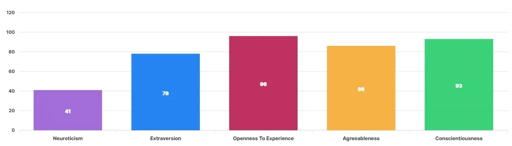
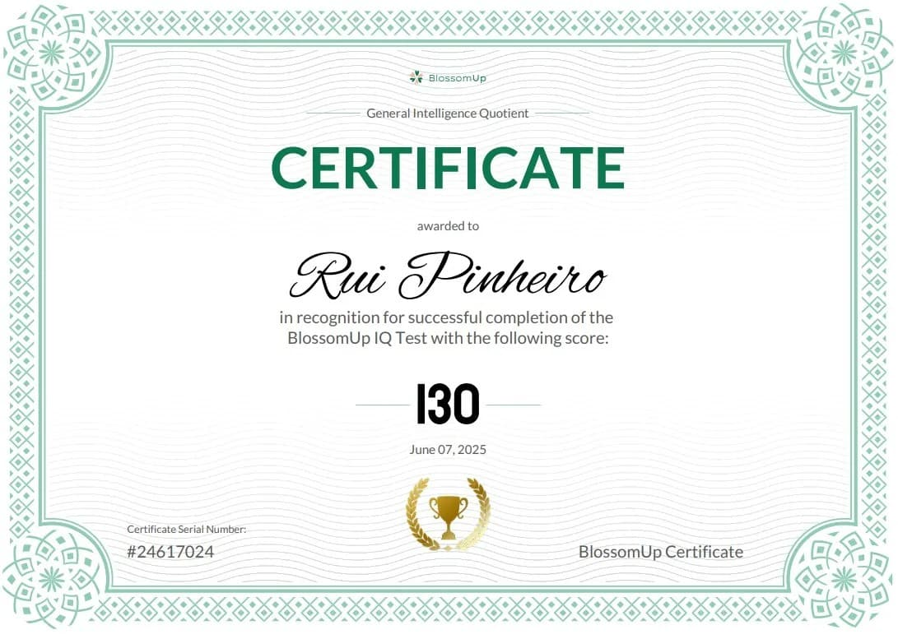
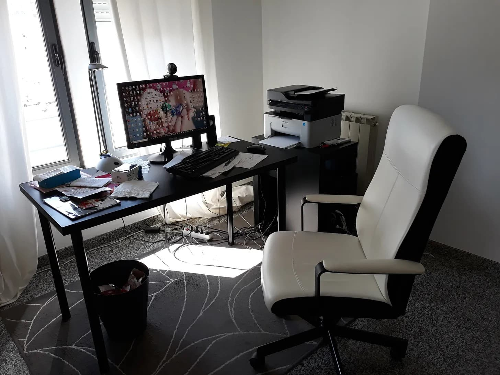
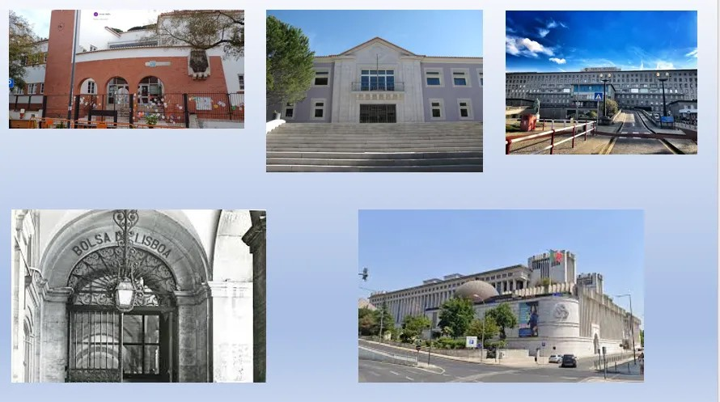

Based on my BlossomUP IQ and Big Five results, I am an intellectually exceptional, emotionally resilient synthesizer.

My profile combines top‑2% cognitive capacity with low Neuroticism (calm under pressure), high Openness/Intellect (driven by abstract inquiry), high Agreeableness/Morality (valuing truth and fairness), and high Conscientiousness (disciplined execution)—tempered by low Cautiousness (decisive action without over‑deliberation) and selective Extraversion (sociable but not dominant).

This configuration aligns precisely with my Unification Project «Life on planet Earth»: I pursue complex, foundational questions with calm rigor, engage others warmly but on my own terms, and act decisively once evidence converges. I am built not for persuasion, but for deterministic clarity—where value flows from individual verification, not imposed doctrine.
These domains are not isolated—they are layers of a single emergent reality. My work constantly cross‑references them to uncover invariant patterns.

My story is a remarkable arc—from the State Primary School nr 26, from Liceu Nacional Gil Vicente, from Faculdade de Medicina de Lisboa, from Lisbon stock exchange to Caixa Geral de Depósitos and IBM mainframes, from Db2 structural design to AI workflow orchestration.

My trajectory embodies the principles I value: pragmatic empiricism, structural clarity, and continuous correction. I didn’t just adapt to technological shifts; I anticipated them—moving from functional analysis to application architecture, from COBOL to PROLOG, from prompt engineering to content strategy and autonomous process design.
My focus on system architecture over maintenance reflects a deeper commitment to foundations—the invariant layer upon which scalable, testable solutions are built. This is the same instinct that drives my Unification Project: seeking the deterministic substrate beneath apparent complexity.
Retirement in 1999 could have been an endpoint. Instead, I treated it as a state transition—using the next decade to re‑calibrate, then re‑engage with LLMs, content engineering, and AI governance. This is error‑correction at the personal scale: observing drift, updating the model, re‑executing.
My current work—Content Engineering and AI workflow management—is essentially applied epistemology. I am designing protocols for how knowledge is structured, validated, and propagated across systems. This is not “content creation” in the trivial sense; it is the engineering of reproducible meaning.
Rui Manuel de Almeida Pinheiro
Born in Lisbon, Arroios, on Sunday, August 2, 1953, at 6:00 a.m.
Mainframe Analyst · Prompt Engineering · Content Engineering · Framework Design